BAODAN
- Type
- Studio brand
- Role
- Brand, packaging, art direction, films

BAODAN is my own test brand. One name, five products: black-gold honey, wildflower honey, protein oats, salmon cat food and a knitwear lookbook. Each has its own packaging, art direction and launch content, so new techniques get proven here before they reach a client.
Black-gold honey
A matte black jar with a gold hexagon window. Stills, macro details and three product loops.
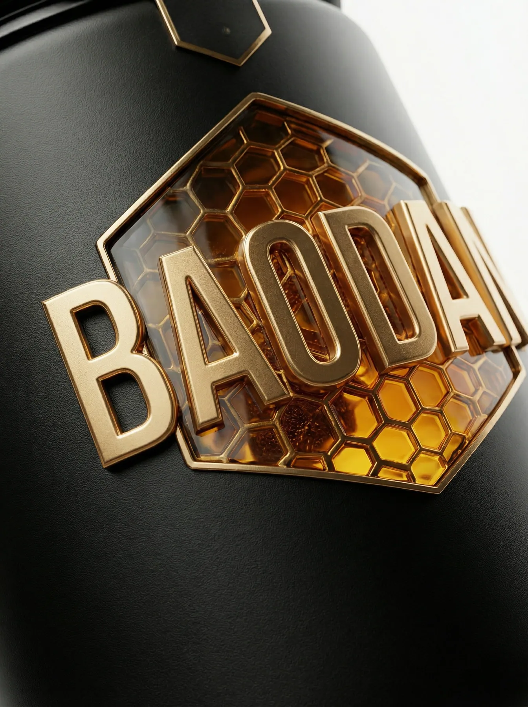
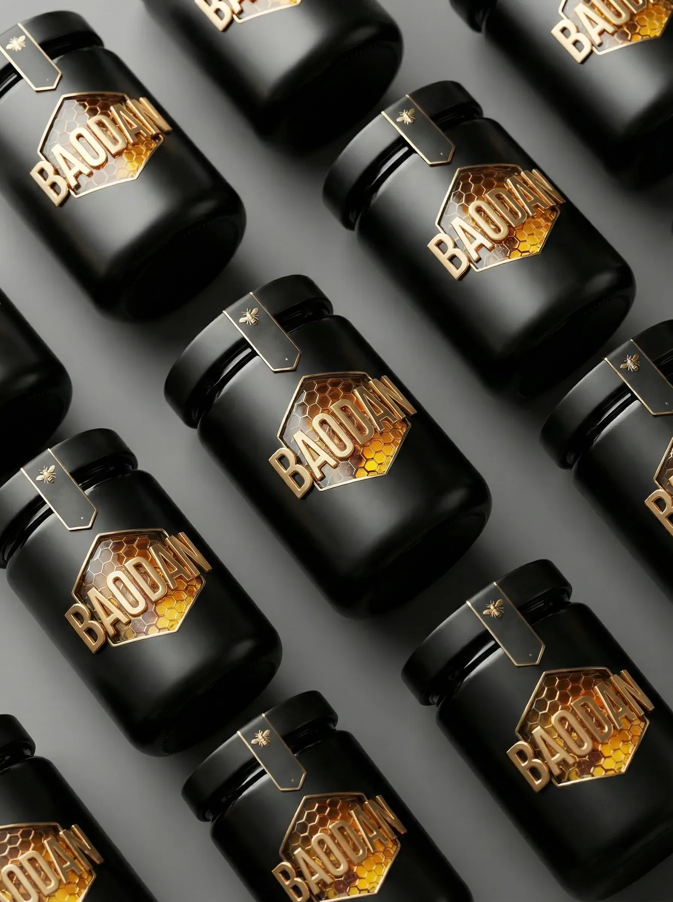
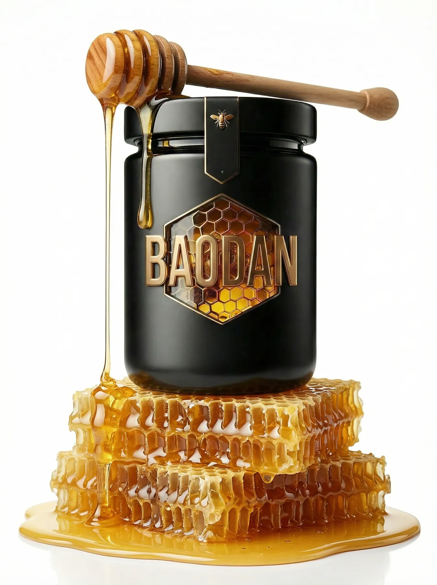
Salmon cat food
A full-orange key visual system and a short film about a cat with a secret plan.
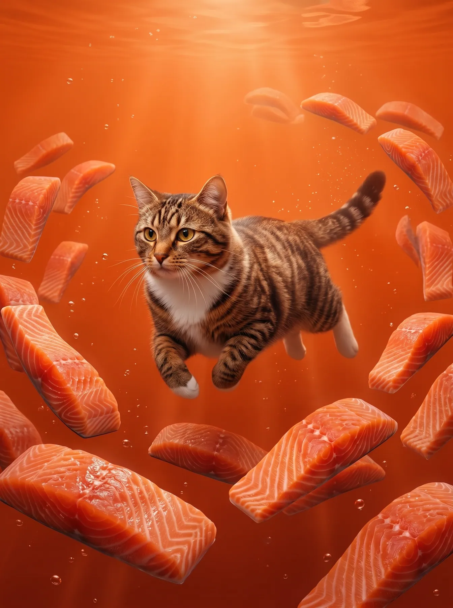
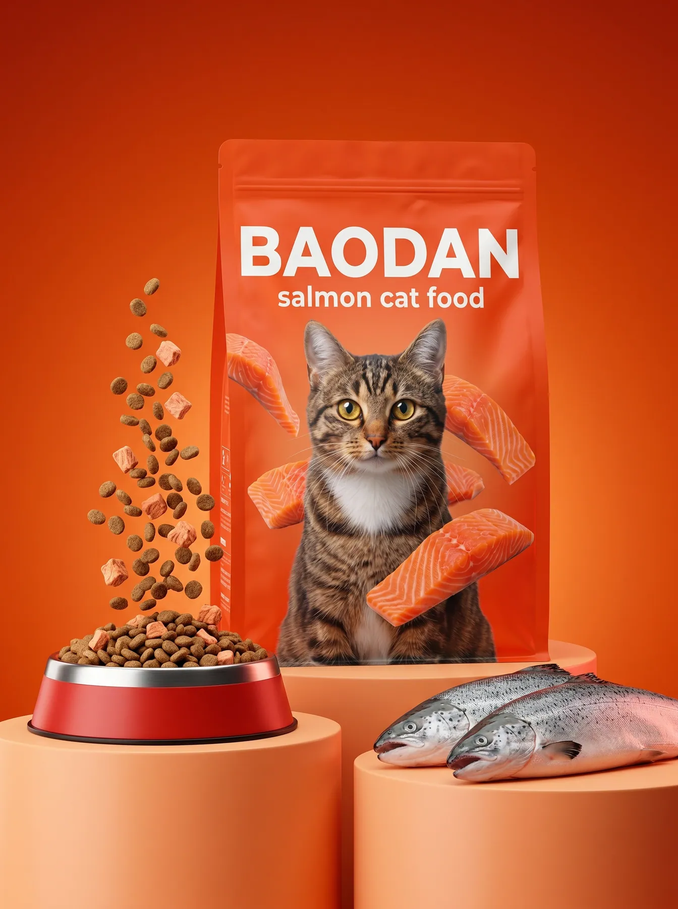
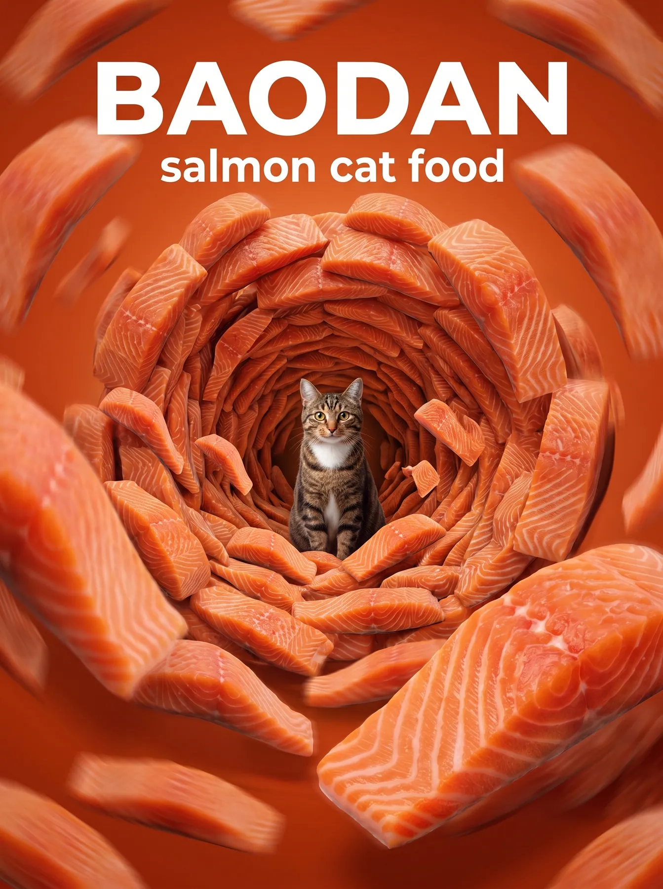
Wildflower honey and protein oats
Two lighter, warmer worlds for the breakfast shelf.
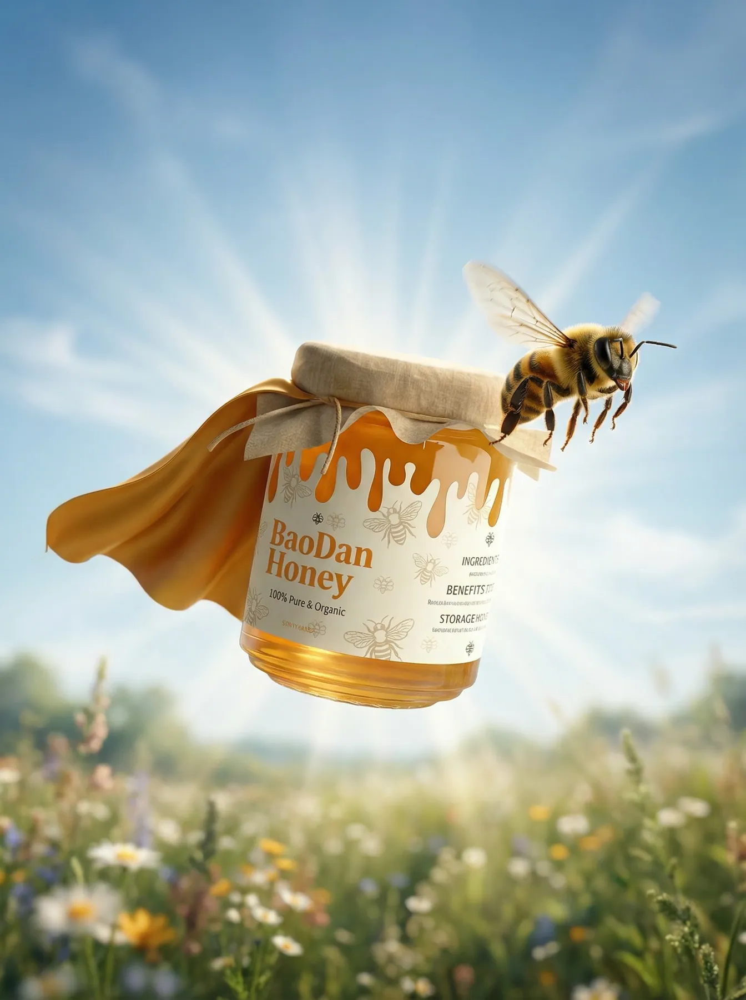
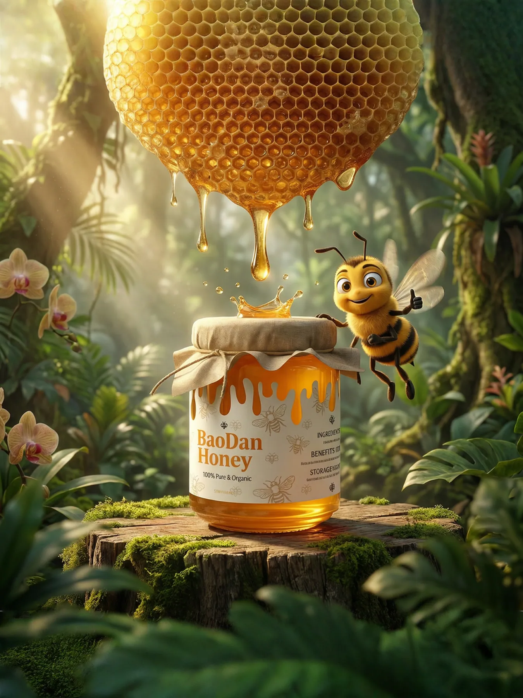
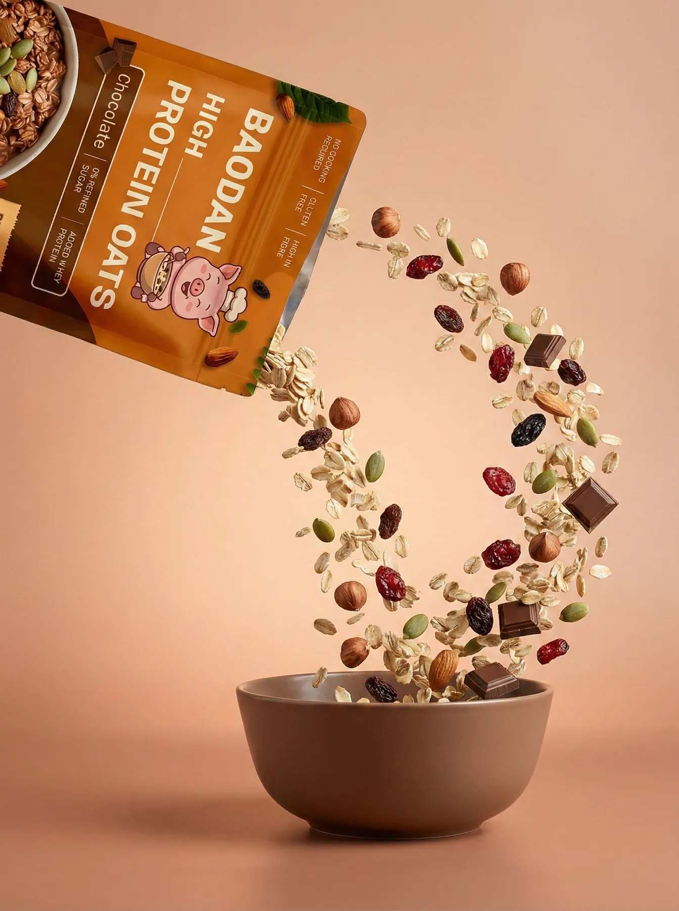
Knitwear lookbook
One model, seventeen looks, printed cats and dogs.
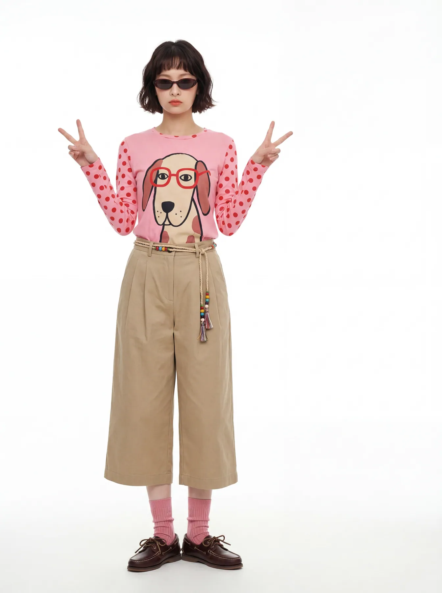
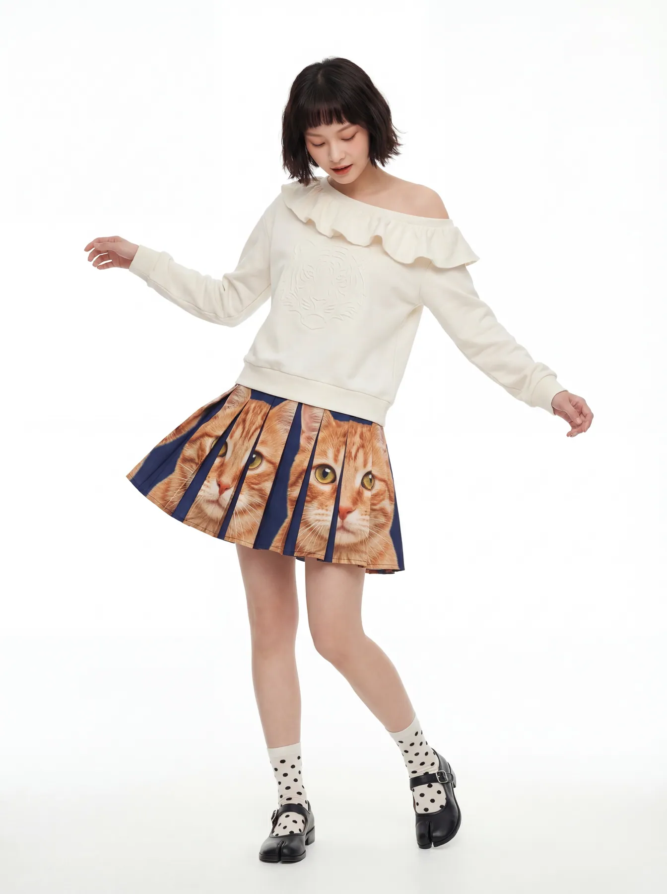
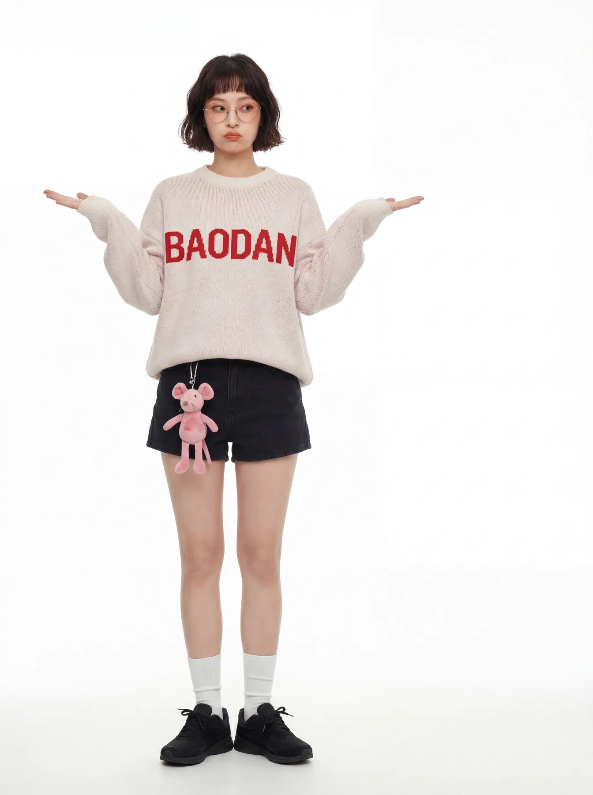